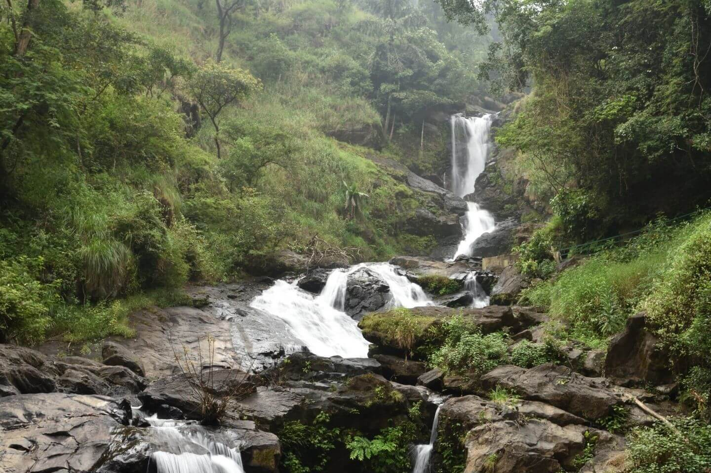
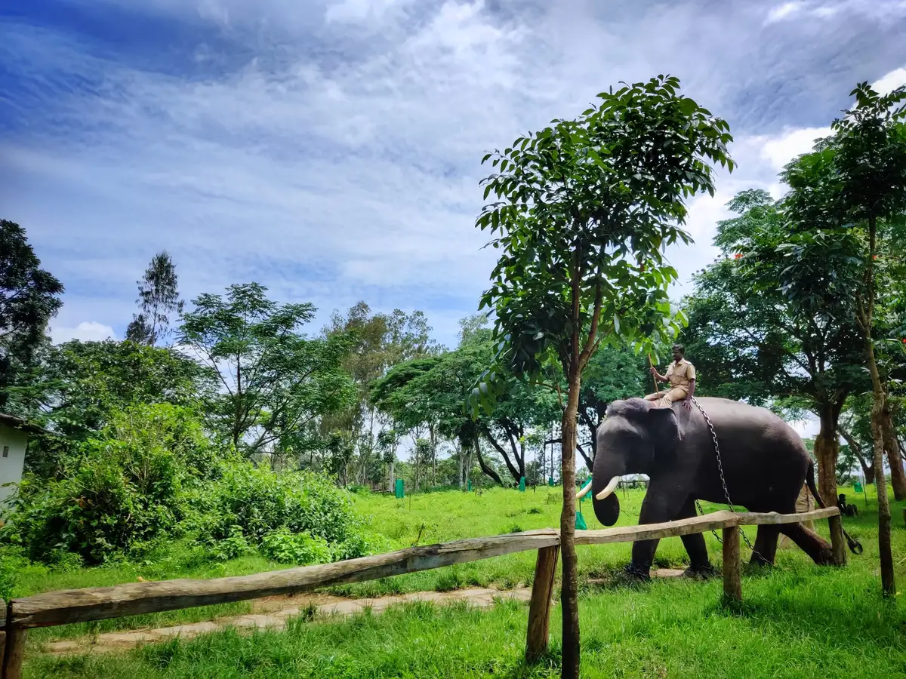
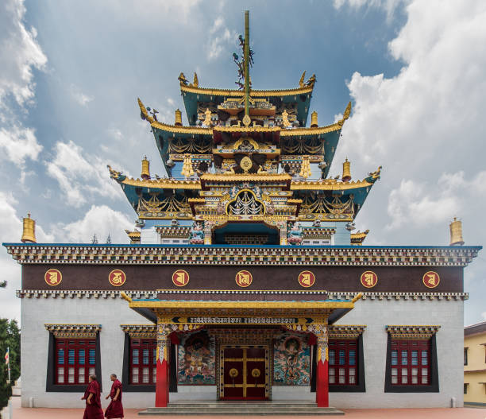
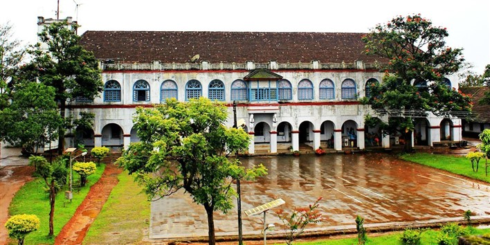
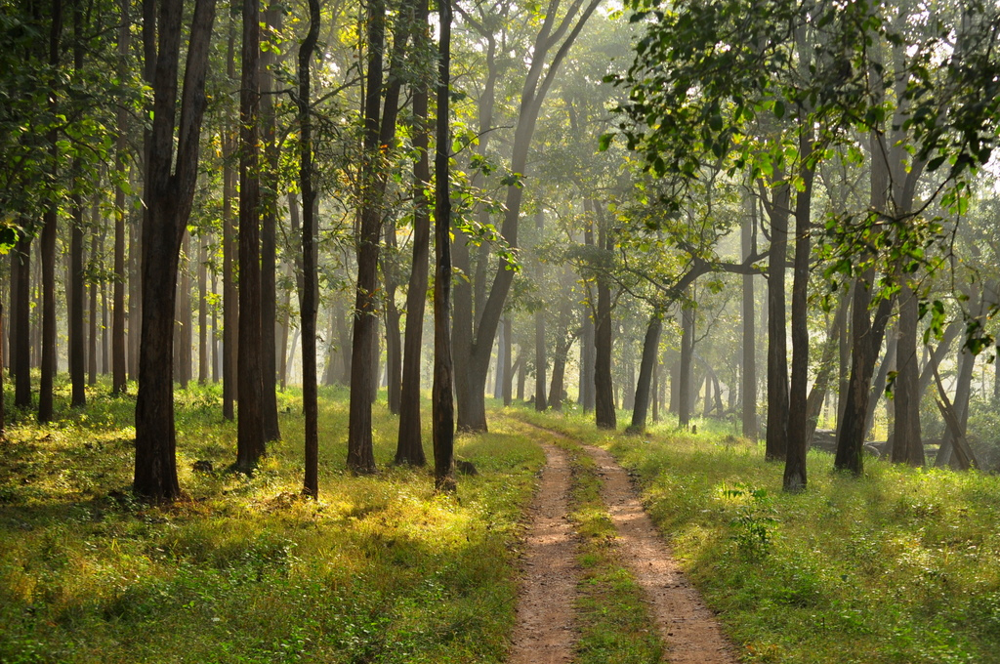
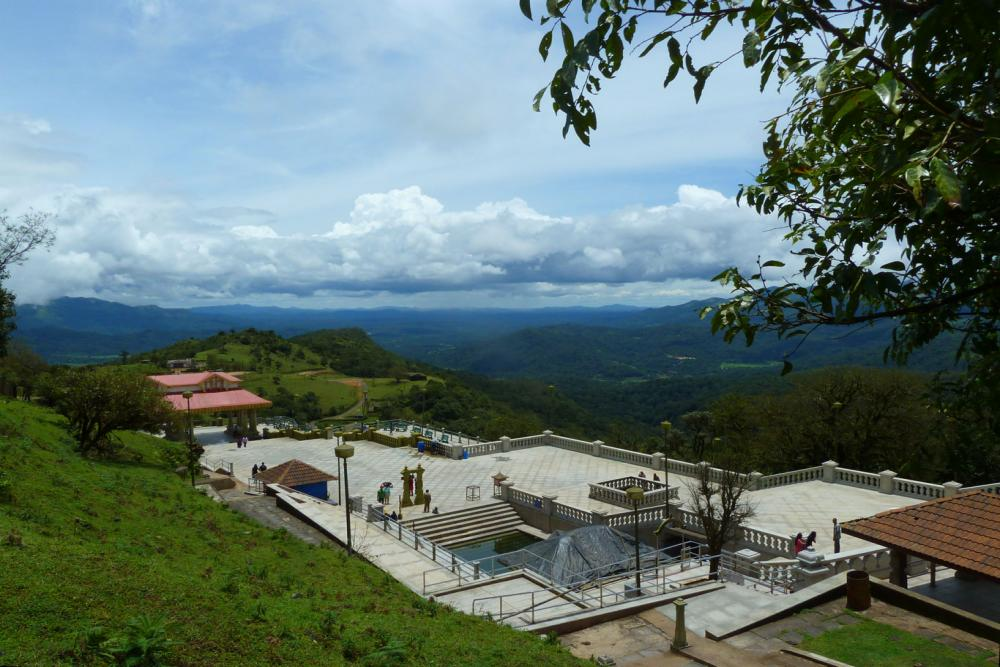
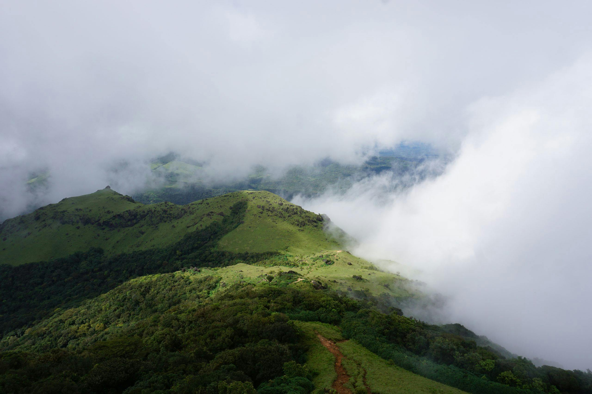
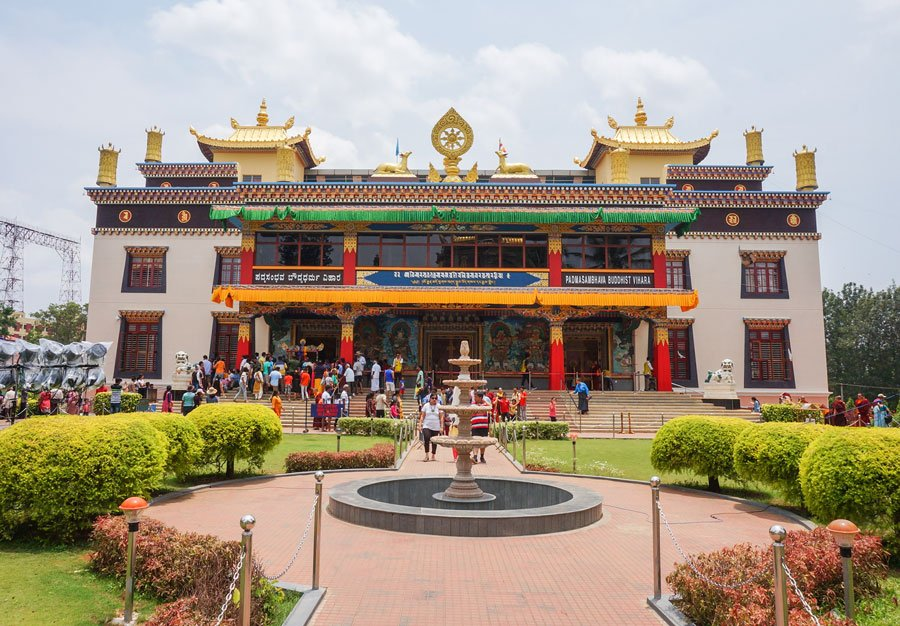
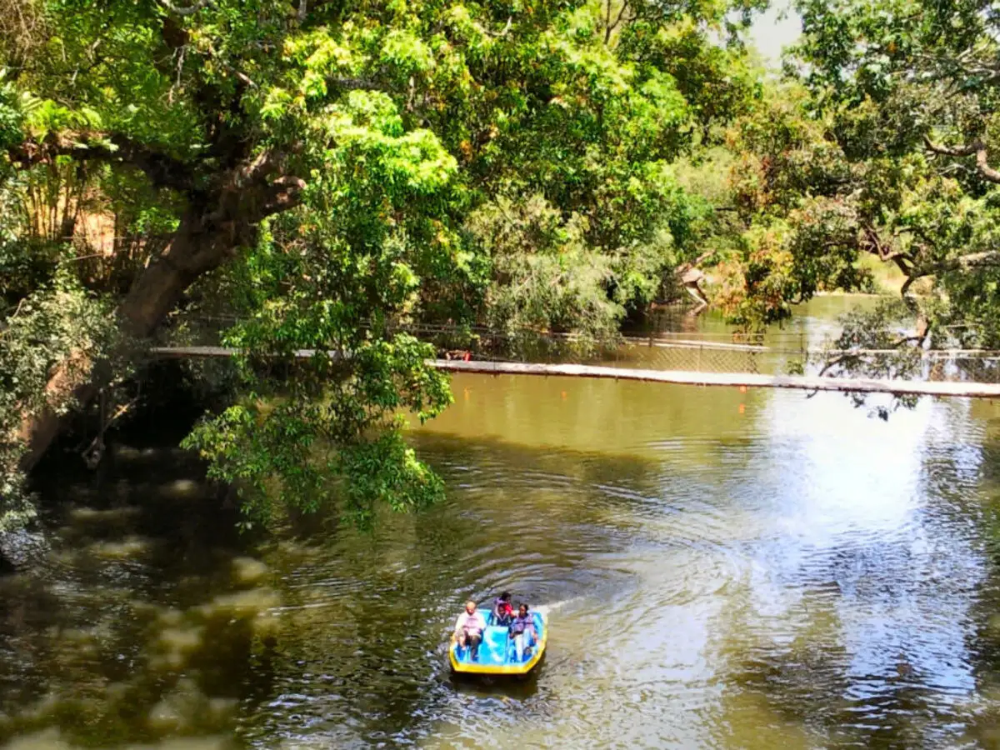
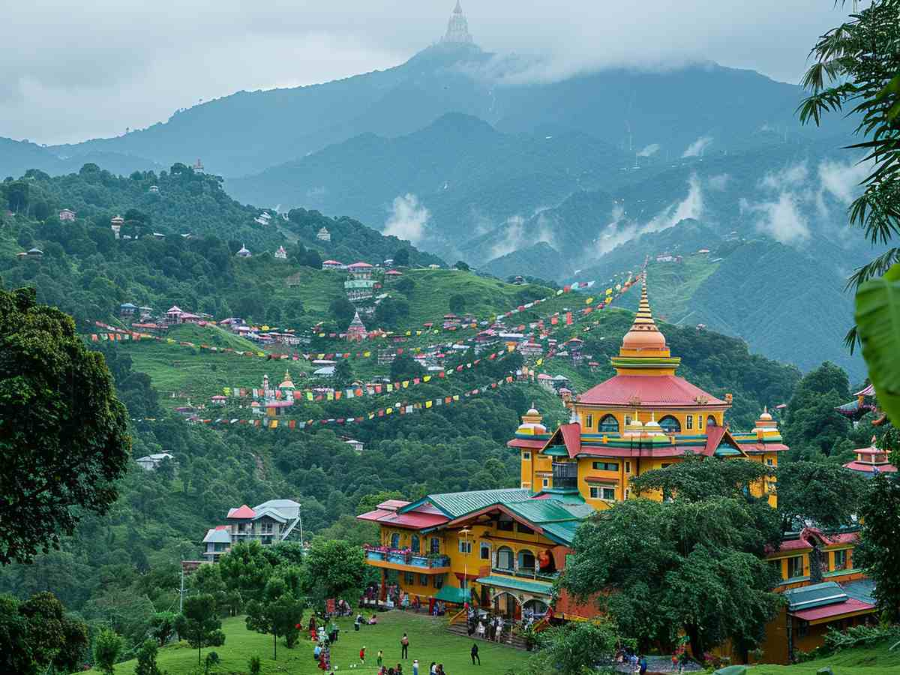

Iruppu Falls, also known as Lakshmana Tirtha Falls, is a significant waterfall located in the
Brahmagiri Range of Kodagu
district in Karnataka, India. It's a popular tourist attraction and
pilgrimage site, known for its
natural beauty and
the nearby Rameshwara Temple.
1. Location and Surroundings:
The falls are situated within the Brahmagiri Wildlife Sanctuary, offering a scenic backdrop of
lush
greenery and rolling
hills.
2. Mythological Significance:
A popular legend associates the falls with the Hindu epic Ramayana, where Lakshmana is
believed to
have created the
water source for Lord Rama by shooting an arrow into a rock.
3. Rameshwara Temple:
The Rameshwara Temple, dedicated to Lord Shiva, is located near the falls and attracts many
pilgrims, especially during
Shivaratri.
4. Best Time to Visit:
The monsoon season (June to September) and the post-monsoon period offer the most scenic
views of
the falls when the
water flow is at its peak.
5. Visitor Information:
Entry to the falls requires a nominal fee, and visitors can access the site through a well-constructed
pathway and
steps. It's advisable to wear sturdy shoes, carry essentials like water and snacks,
and be mindful
of the fast-flowing
water, especially during the rainy season.

Dubare Elephant Camp, located on the banks of the Cauvery River in Coorg, is a unique ecotourism
destination where
visitors can interact with elephants and learn about their history and biology. Key activities include
elephant
grooming, bathing, feeding, and demonstrations of elephant obedience. It's a popular spot for families
and offers a
chance to experience elephants up close.
1.Elephant Interaction:
Visitors can participate in bathing and feeding elephants under the
guidance of
mahouts.
2.Educational Experience:
Naturalists provide information about elephant history, ecology, and
biology.
3.River Activities:
Enjoy the riverbank setting, including walking across the river during the dry
season or taking
a boat during the monsoon.
4.Family-Friendly:
A great place for kids and families to enjoy a unique wildlife experience.
5.Best Time to Visit:
The post-monsoon months (mid-September to March) offer the best weather and
water levels for
activities.
6.Training Center:
Historically, it was a training camp for Mysore Dasara elephants.

The Golden Temple, also known as Namdroling Monastery, is a significant Tibetan Buddhist
monastery
in Bylakuppe, India,
renowned for its stunning architecture, vibrant atmosphere, and
1. Historical Importance:
Established in 1963 by His Holiness Pema Norbu Rinpoche, it's one the largest Tibetan Buddhist
centers outside Tibet
and serves as refuge for Tibetan refugees, preserving their culture and traditions.
2. Architectural Marvel:
The monastery is famous for its Golden Temple, adorned with intricate murals, colorful frescoes,
and
three towering
40-foot gold statues of Buddha, Guru Rinpoche, and Amitayus.
3. Spiritual Center:
It is a major teaching center for the Nyingma school of Tibetan Buddhism, offering a serene
environment for meditation,
chanting, and learning.
4. Cultural Significance:
The monastery complex includes prayer halls, meditation halls, and living quarters for monks
and
nuns, fostering a
strong sense of community and preserving Tibetan Buddhist practices.
5. Visitor Experience:
Visitors can witness religious ceremonies, observe monks in prayer, explore the vibrant temple,
and
purchase Tibetan
souvenirs, making it a unique cultural and spiritual destination.

Madikeri Fort, a historical landmark in Coorg, has a rich history and distinctive features. Originally
built by
Mudduraja in 1681, it was later renovated and fortified with granite by Tipu Sultan. The fort houses a
palace, a museum,
and notable elephant statues.
1. Construction and Reconstruction:
The fort was initially built with mud and later rebuilt with granite by Tipu Sultan in the 18th
century.
2. Historical Significance:
It was constructed by Mudduraja, a king of Kodagu, in 1681.
3. Key Structures:
Inside the fort, you'll find a palace and a museum, showcasing artifacts and historical items.
4. Iconic Statues:
Two life-size elephant statues made of mortar stand at the fort's entrance, adding to its grandeur.
5. British Influence:
The British also played a role, replacing a Virabhadra temple with an Anglican church within the fort
complex.
6. Renovation Efforts:
The fort has undergone various renovations and currently is under some renovation, which may affect the
visitor
experience.

Nagarhole National Park, also known as Rajiv Gandhi National Park, is a popular destination for
wildlife enthusiasts,
offering a rich biodiversity of flora and fauna.
1. Abundant Wildlife:
The park is known for its diverse wildlife, including tigers, leopards, elephants, gaur (Indian
bison),
dholes (wild
dogs), sloth bears, and various species of deer like chital and sambar. It's also a great
place for
birdwatching, with
over 270 bird species recorded.
2. Tiger Reserve:
Nagarhole was declared a tiger reserve in 2007, highlighting its importance as a protected area
for
tigers and other
endangered species.
3. Kabini River:
The Kabini River flows through the park, adding to its scenic beauty and providing a habitat
for
various aquatic life,
including crocodiles and otters. The river also forms a natural boundary
between Nagarhole and
Bandipur National Park,
with the Kabini reservoir separating the two.
4. Diverse Forest Types:
The park features a mix of moist and dry deciduous forests, with teak, rosewood, and sandalwood
trees dominating the
landscape. The park also has semi-evergreen forests in sheltered valleys.
5. Best Time to Visit:
The best time to visit Nagarhole is during the dry season, from October to May, when the
weather is
pleasant and
wildlife viewing opportunities are optimal. The monsoon season, from
June to September, brings lush
greenery but can
make the roads muddy and some areas inaccessible.

Talacauvery, located in Kodagu (Coorg) district of Karnataka, is a significant pilgrimage site and the
origin of the
Cauvery River. It's known for its ancient temples, especially the one dedicated to Goddess Kaveriamma,
and the belief
that the river originates from a small spring near the temple.
1. Birthplace of the Cauvery River:
Talacauvery is revered as the source of the sacred Cauvery River, a major river in South India.
2. Temple Dedicated to Goddess Kaveriamma:
The temple complex houses a shrine dedicated to Goddess Kaveriamma, the presiding deity, and also
includes shrines for
Lord Agastheeswara and Lord Ganesha.
3. Symbolic Origin:
While the river emerges from a small spring near the temple, it's believed that Sage Agastya played a
key role in its
origin, with a temple dedicated to him also present.
4. Pilgrimage Site:
Talacauvery is an important pilgrimage destination for Hindus, drawing devotees from across the country
and the
world.
5. Location in Brahmagiri Hills:
The source of the Cauvery is situated at an altitude of 1,341 meters (4,400 ft) in the Brahmagiri Hills
of the Western
Ghats.

Tadiandamol Peak, the highest mountain in Kodagu district, Karnataka, is significant for its
trekking experience,
historical landmarks, and natural beauty. It offers stunning views, diverse
flora and fauna, and
challenging trails.
1. Highest Peak in Kodagu:
Tadiandamol is the highest peak in Kodagu (Coorg) district and the third highest in Karnataka.
2. Trekking Destination:
It's a popular trekking destination, attracting both amateur and experienced hikers, with
trails
through forests and
grasslands.
3. Historical Significance:
The Nalknad Palace, located at the foothills, is a notable historical landmark and was used in
the
Great Trigonometric
Survey.
4. Natural Beauty:
The mountain boasts diverse flora and fauna, including shola forests in the valleys, and offers
panoramic views of the
surrounding landscape.
5. Best Time to Visit:
The ideal time for trekking is from September to February, with the post-monsoon season offering
lush greenery. Camping
is banned at the peak.

Bylakuppe, a Tibetan settlement in Karnataka, is notable for its large monasteries, vibrant Tibetan
culture, and
peaceful atmosphere.
1. Second Largest Tibetan Settlement:
Bylakuppe is the second-largest Tibetan settlement in the world outside of Tibet, after Dharamshala.
It's home to over
70,000 Tibetans.
2. Golden Temple (Namdroling Monastery):
This is the most famous attraction, known for its impressive 60-foot-tall gilded statues of
Padmasambhava, Buddha, and
Amitayus. The monastery is also a significant Nyingmapa teaching center.
3. Monasteries and Educational Institutions:
Bylakuppe boasts several monasteries, including Sera Jey, Tashilhunpo, Sakya, Kagyur, and Nyinmapa. It
also has
educational institutions like Sera Monastery, which is modeled after the Sera University in Tibet.
4. Tibetan Culture and Traditions:
The settlement maintains strong Tibetan cultural and religious practices, offering a unique glimpse into
Tibetan
Buddhism and way of life.
5. Shopping and Markets:
Bylakuppe has markets where you can find Tibetan handicrafts, clothing, souvenirs, and traditional
items.
6. Spiritual and Peaceful Atmosphere:
The town offers a serene environment with beautiful landscapes, monasteries, and a strong sense of
spirituality.

Cauvery Nisargadhama is a serene island in Coorg, known for its natural beauty and recreational
activities. Key
highlights include: a lush bamboo and sandalwood forest, opportunities for
elephant and boat rides,
a deer park, and a
hanging rope bridge leading to the island. It's a popular
destination for nature lovers and families
seeking a peaceful
getaway.
1. Island Setting:
Nisargadhama is a 64-acre island formed by the Cauvery River, offering a unique natural
environment.
2. Abundant Flora:
It boasts thick bamboo groves, sandalwood trees, and other tropical vegetation, creating a
picturesque landscape.
3. Wildlife Encounters:
Visitors can spot deer in the open deer park and enjoy bird watching at the Exotic Bird Park.
4. Adventure Activities:
The park offers various recreational activities like elephant rides, boat rides, zip-lining, and
a
rope park.
5. Accessibility:
The island is accessed via a hanging rope bridge, adding to the charm of the place.

Gangtok, the capital of Sikkim, is a popular tourist destination known for its stunning Himalayan views,
vibrant
culture, and numerous monasteries. Key attractions include Tsomgo Lake, Rumtek Monastery, Nathula Pass,
and MG Marg, the
city's central hub. The city also boasts beautiful waterfalls like Banjhakri Falls and Seven Sisters
Waterfalls, as well
as viewpoints like Tashi Viewpoint and Ganesh Tok.
1. Location and Elevation:
Gangtok is situated in the eastern Himalayan mountain ranges at an elevation of about 1,650 meters
(5,410 feet).
2. Mount Kanchenjunga:
The city offers stunning views of Mount Kanchenjunga, the world's third-highest peak, especially on
clear days.
3. Tibetan Buddhist Influence:
Gangtok has a strong Tibetan Buddhist influence, evident in its numerous monasteries and cultural sites.
4. Rumtek Monastery:
A significant Tibetan Buddhist monastery, Rumtek is a major attraction and the seat of the Karmapa.
5. Tsomgo (Changu) Lake:
This high-altitude glacial lake is a popular tourist spot, surrounded by snow-capped mountains and
offering yak rides
and a Shiva temple.